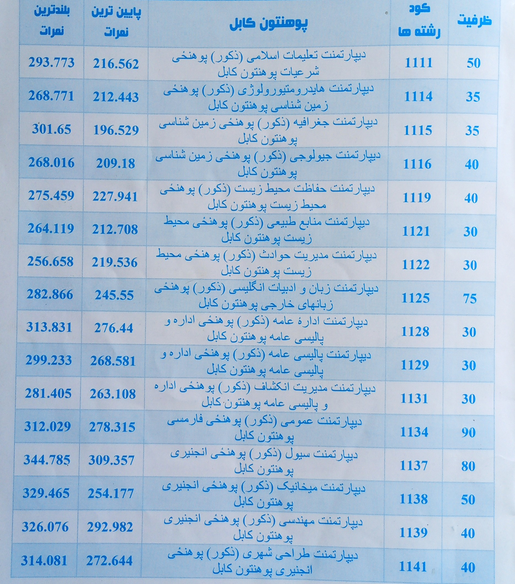
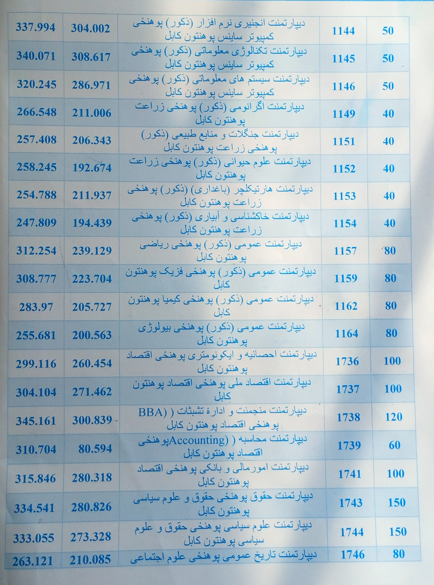
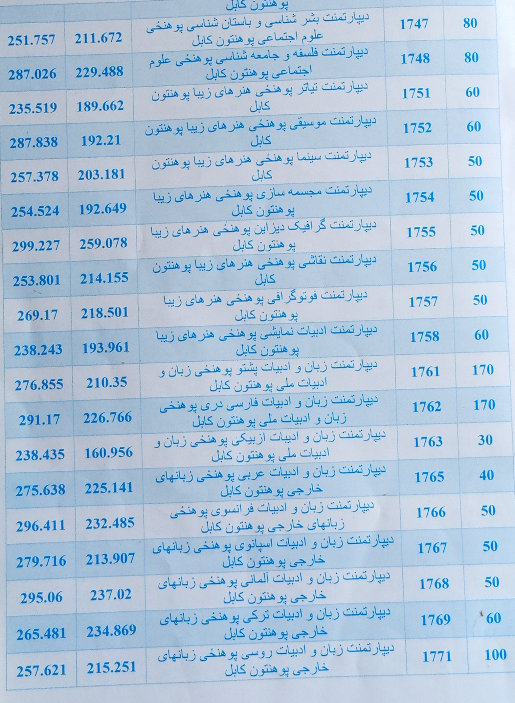

توجه : بخاطر زیادی دانشگاه های افغانستان و همچنین رشته ها، ما فقط لیست احتمالی رشته های دانشگاه کابل که دانشگاه مرکز می باشد را تهیه کرده ایم. امید که مفید واقع شود☺️ و بابت که نتوانستیم لیست همه رشته های دانشگاه های افغانستان را تهیه کنیم پوزش می طلبیم.


